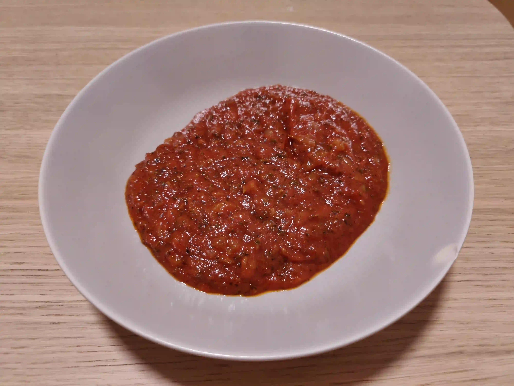

Pizza Sauce

A good and easy to make pizza sauce
- Prep time: 10 min
- Cook time: 60 min
- Servings: 8
Ingredients
- 2 onions
- 3 garlic cloves
- olive oil
- 700g tomato sauce
- 6 spoon tomato concentrate
- 0.5 spoon sugar
- 1 spoon salt
- 1 spoon pepper
- 1 spoon thyme/rosemary (finely chopped)
- 1 spoon oregano (finely chopped)
- 2 spoon basil (finely chopped)
Directions
- Finely chop onions and garlic into a pot.
- Cover them with olive oil.
- Cook mixture on medium heat (~4/10) until glazed.
- Add tomato sauce, tomato concentrate, sugar, salt, pepper, thyme/rosemary, oregano and basil to the mixture.
- Let the mixture boil on low heat (~2.5/10) for ~60min.